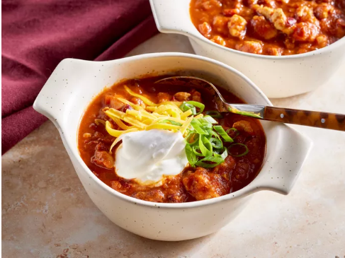

Simple Turkey Chili
Home

Description
A simple, flavourful and hearty meal that tests better no matter the day. Best served with low-fat cheddar cheese and sour cream.
- 1 pound of ground turkey cooked in olive oil
- 1 onion and a tablespoon of garlic for flavour and depth
- canned crushed tomatoes and kidney beans
- chili powder, paprika, dried oregano, cayenne pepper, cumin, salt, and black pepper.
Steps
- Brown the turkey in olive oil. Add the onion and cook until tender.
- Stir in the remaining ingredients.
- Bring to a boil, reduce the heat, cover, and simmer for 30 minutes.